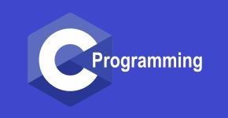

My name is Cole DeVlaeminck and I am a 3rd year software engineering major at Iowa State. The thing I like most about software engineering is being able to come up with an idea, and bring it to life through software. It is so cool to be able to build almost anything through writing code on a computer. Almost everyone can do it, but not nearly as many will do it. I am especially interested in software as it applies to hardware, but I'm still exploring different areas. Only time will tell where my software development journey takes me!

Used C programming and a microcontroller to configure IR and ping sensors, clean data, and graphically present it through a Python GUI. Designed the robot to be controlled remotely through PuTTY terminal with UART communications.
You can reach me through email at coledev@iastate.edu